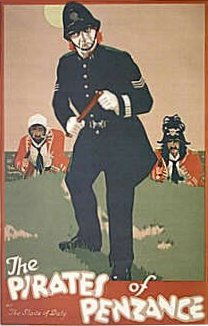

You are here: > > Web Opera
Written by W. S. Gilbert
Composed by Arthur Sullivan
Featuring
Ninety Minutes of Music
and
All the Lyrics and Dialogue
Illustrated with Historic Photographs of D'Oyly Carte Productions
You can download all the MIDI Files or all the Karaoke files as single zipped files, 139KB or 160KB respectively.
|
 |
||||||||||||||||||||||||
| Overture |
ACT I
| No. 1 | Opening Chorus & Solo (Samuel) | "Pour, oh pour, the pirate sherry" |
| Dialogue | ||
| No. 2 | Song (Ruth) | "When Frederic was a little lad" |
| Dialogue | ||
| No. 3 | Song (Pirate King & Chorus) | "Oh, better far to live and die" |
| Dialogue | ||
| No. 4 | Recit. & Duet (Ruth & Frederic) | "Oh, false one... |
| No. 5 | Chorus of Girls | "Climbing over rocky mountain" |
| Dialogue | ||
| Nos. 6 & 7 |
Recit. (Edith, Kate, Frederic & Chorus) Song (Frederic & Chorus) |
"Stop, ladies, pray!... Oh, is there not one maiden breast" |
| No. 8 | Song (Mabel & Chorus) | "Poor wandering one" |
| Nos. 9 & 10 |
Solos (Kate & Edith) Duet (Mabel & Frederic) & Chorus |
"What ought we to do" "How beautifully blue the sky" |
| No. 11 | Solo (Frederic) & Chorus | "Stay we must not lose our senses... Here's a first-rate opportunity" |
| No. 12 | Recitative | "Hold, Monsters!" |
| No. 13 | Song (Major-General & Chorus) | "I am the very model of a modern Major-General" |
| Dialogue | ||
| No. 14 | Finale Act I | "Oh, men of dark and dismal fate" |
ACT II
| No. 15 | Chorus & Solo (Mabel) | "Oh, dry the glist'ning tear" |
| Dialogue | ||
| Nos. 16 & 17 |
"Then, Frederic, let your escort lion-hearted... When the foeman bears his steel" |
|
| Nos. 18 & 19 |
Recitative Trio (Ruth, Frederic & King) |
"Now for the pirates lair! "When you had left our pirate fold" |
| Dialogue | ||
| No. 20 | Trio (Ruth, Frederic & King) | "Away, away! My heart's on fire!" |
| Nos. 21 & 22 |
Recitative & Duet (Frederic & Mabel) |
"All is prepared... "Stay, Frederic, stay... Ah, leave me not" |
| No. 23 | Recitative (Mabel & Sergeant) |
"No, I'll be brave" |
| Dialogue | ||
| No. 24 | Song (Sergeant) | "When a felon's not engaged" |
| Nos. 25 & 26 |
Chorus & Solos Chorus & Solo (Samuel) |
"A rollicking band of Pirates we... With cat-like tread" |
| Nos. 27 & 28 |
Recitative Song (Major-General) & Finale |
"Hush, hush! Not a word.... Sighing softly to the river" |
|
Page Created 20 August, 2011